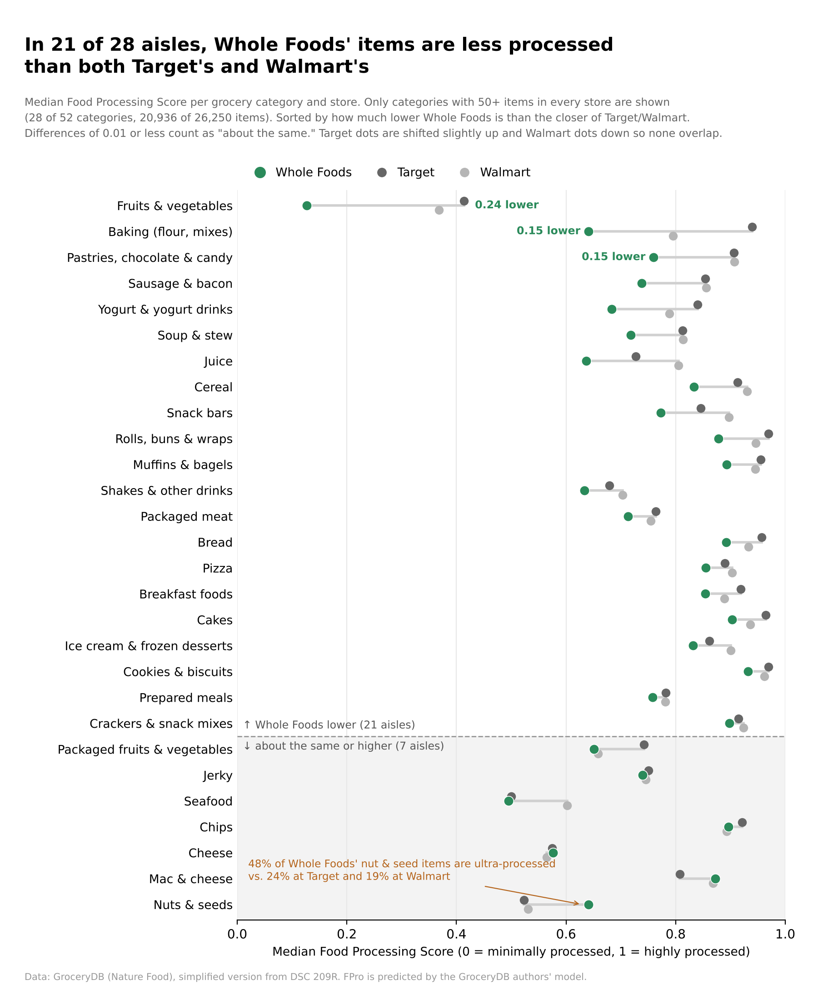
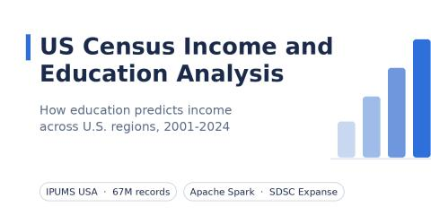
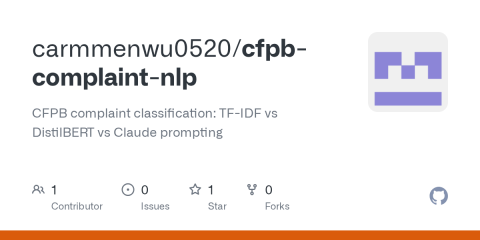
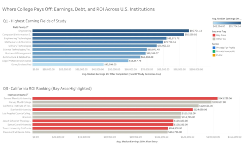

Grocery Store Food Processing (DSC 209R)

Expository visualization of 26K grocery items. Aisle by aisle, Whole Foods' items are less processed than Target's and Walmart's in 21 of 28 categories. Built in Python with matplotlib.

Expository visualization of 26K grocery items. Aisle by aisle, Whole Foods' items are less processed than Target's and Walmart's in 21 of 28 categories. Built in Python with matplotlib.

Cleaned 67M IPUMS records in PySpark and trained a Random Forest model; cut training time from 2.1 hours to 17 minutes. Repo

Compared TF-IDF, fine-tuned DistilBERT, and LLM prompting on 45K CFPB complaints across 9 classes (macro-F1 0.752). Repo

Six-view Tableau dashboard linking College Scorecard data on 6,273 institutions: earnings, graduation rates, and a California ROI ranking. Tableau Public